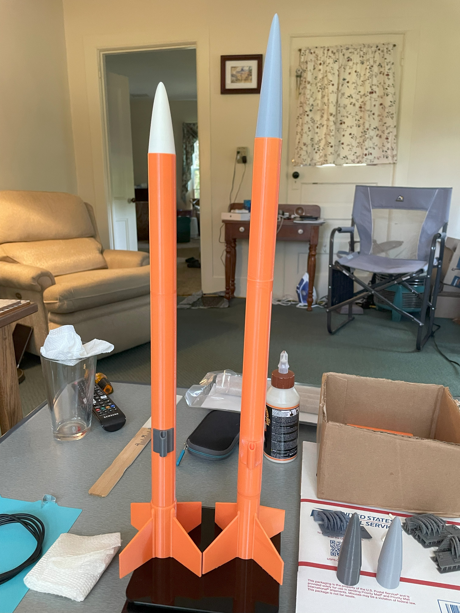
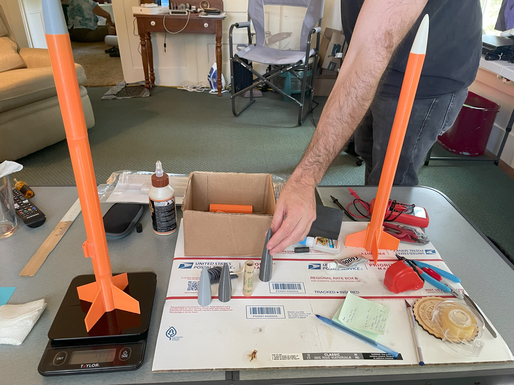
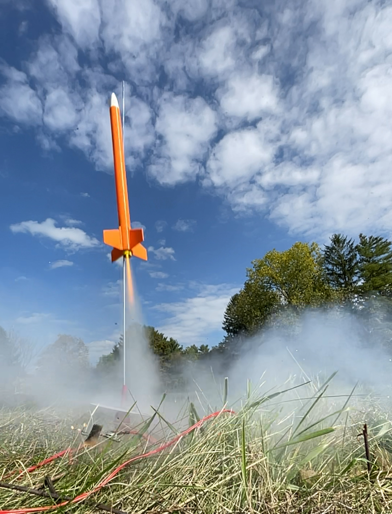
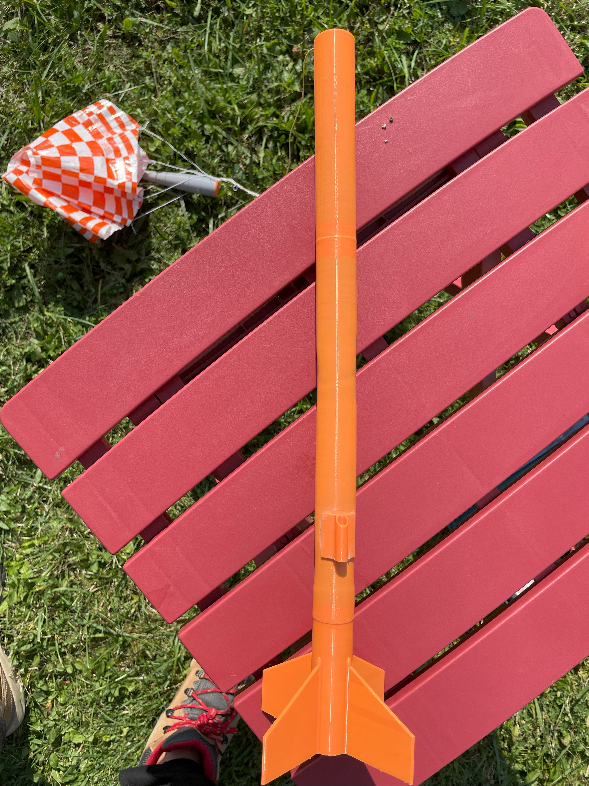

Mission: STRATUM 2
Mission Video
Mission Overview
West-Tek Solutions is targeting Sunday, September 28th for launch of our Stratum 2 test rockets from the West Family Launch Site. Liftoff is planned for 3:00 PM EDT.
This will be the first flight of our Stratum 2 rocket variants, powered by an 18mm B6-4 motor. Following liftoff, the rockets are expected to complete a standard ascent, deploy their recovery systems, and return to the launch site for inspection and potential relaunch preparation.
Mission: Stratum 2 Launch represents a critical step in addressing the heat damage issues encountered during the Stratum 1 flight. Each rocket variant features a custom West-Tek-designed fin can, ensuring the motor remains securely in place and preventing dislodgement into the body tube. The primary objectives are to launch, recover, and successfully re-launch the rockets while validating the improved fin can design and reinforced PETG body tubes. This mission is important for refining our engineering solutions and ensuring reliable performance for future flights.
By resolving the structural and thermal issues observed in Stratum 1, Stratum 2 demonstrates how design improvements based on testing and expert consultation—particularly advice from our Supreme Advisor, Rob West—will directly improve rocket safety and reliability. These technical upgrades aim to allow for consistent reusability and contribute to West-Tek Solutions’ broader goal of developing resilient, reusable rockets for future testing and missions.
Mission Objectives
Mission Summary
The Stratum 2 mission was a success. Weather conditions were bright and sunny with temperatures in the mid-70s and occasional breezes, providing ideal launch conditions. Both variants of the Stratum 2 rocket were launched: one experienced minor body warping when recovery wadding caught on the shock cord anchor, causing stress and heat, but still flew well and deployed its chute safely. That rocket has been retired. The second rocket successfully flew three times without any noticeable damage, although on the third flight it became temporarily stuck in a nearby tree; we are confident it will descend naturally soon.
Technical performance was excellent overall. The rockets demonstrated significant improvement over Stratum 1, with reinforced PETG body tubes and custom fin cans performing as expected. The first rocket's issue highlighted the shock cord anchor as a potential choke point for future designs. No structural failures were observed in the second rocket, which performed flawlessly on repeated flights.
Overall, the mission exceeded expectations and provided valuable lessons. Objectives of launching, recovering, and validating the new design were met. Knowledge gained from these flights will guide future improvements, including a more streamlined rocket design and a refined shock cord anchoring method. West-Tek Solutions plans to conduct at least one more Stratum launch before moving toward a 24mm motor platform.



